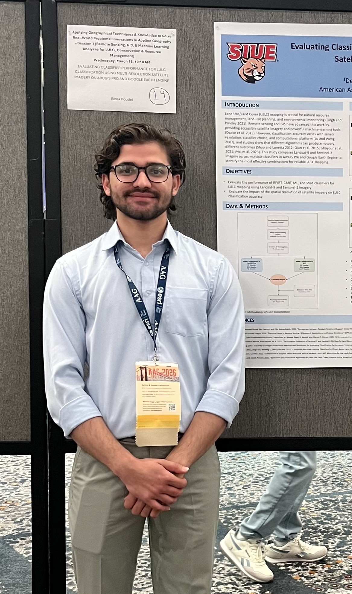

I am Bibek Poudel, a GIS and Remote Sensing analyst focused on solving environmental and spatial problems using modern geospatial tools. My work focuses on integrating GIS, Remote Sensing, LiDAR, and Machine Learning to solve environmental and spatial problems.